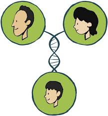
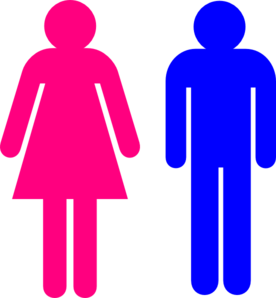
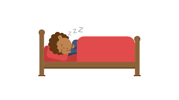

Weight
The term weight is used colloquially and in the biological and medical sciences to refer to a person's mass or weight.
weight is measured in kilograms, a measure of mass, throughout the world,
the body weight is the weight of the person without any items on,
but practically body weight is taken with clothes on but often without the shoes and heavy accessories like mobile phones and wallets.
While the terms mass and weight are often used interchangeably in the context of body weight,
they actually refer to separate but related concepts in physics.
Mass is a measure of an object's inertia and is independent of the effects of gravity,
while weight is a measure of the force due to gravity.
Thus, if a person were to travel from Earth to the Moon,
where there is less gravity, their mass would remain unchanged but their weight would decrease.
You’ve probably wondered at one time or another how much you should weight.
Your ideal weight depends on a number of different factors, including:
- Family history and genes
- sex
- Eating and physical activity habits
- Where you live, work, play, and worship
- Family habits and culture
- Not enough sleep
Family history and genes |
 |
| Overweight and obesity tend to run in families,
suggesting that genes may play a role. Your chances of being overweight are greater if one or both of your parents are overweight or have obesity. Your genes may affect the amount of fat you store in your body and where on your body you carry the extra fat. |
|
sex |
 |
| A person’s sex may also affect where the body stores fat. Women tend to build up fat in their hips and buttocks. Men usually build up fat in their abdomen or belly. Extra fat, particularly if it is around the abdomen, may put people at risk of health problems even if they have a normal weight. |
|
Eating and physical activity habits |
|
| Your eating and physical activity habits may raise your chances of becoming overweight and having obesity if you
eat and drink a lot of foods and beverages that are high in calories, sugar, and fat. drink a lot of beverages that are high in added sugars. spend a lot of time sitting or lying down and have limited physical activity. |
|
Where you live, work, play, and worship |
|
| Where you live, work, play, and worship may affect your eating and physical activity habits, and access to healthy foods and places
to be active. For example, living in an area that has a high number of grocery stores can increase your access to better quality, lower calorie foods. Living in a neighborhood with a lot of green spaces and areas for safe physical activity may encourage you to be more physically active. Where you work and worship may also make it easier for you to eat unhealthy, high-calorie foods. Vending machines, cafeterias, or special events at your workplace or place of worship may not offer healthy, lower calorie options. Whenever possible, choose the healthier options and limit your treats to a small sliver of pie or cake. |
|
Family habits and culture |
|
| Family eating and lifestyle habits may affect your weight and health. Some families may consume foods and beverages
that are high in fat, salt, and added sugars or eat large amounts of unhealthy foods at family gatherings. Some families may also spend a lot of inactive time watching TV, using a computer, or using a mobile device instead of being active. Your social, ethnic, or religious group culture may also affect your weight and health because of shared eating and lifestyle habits. Some cultures may consume foods and beverages that are high in fat, salt, and added sugars. Some common food preparation methods, such as frying, may lead to high-calorie intake. Regularly consuming foods high in calories, fat, and sugar may lead to weight gain overtime |
|
Not enough sleep |
 |
| People who don’t get enough sleep may eat more calories and snack more. 6 Experts recommend that adults ages 18 to 64 get 7 to 9 hours of sleep a day, and that adults ages 65 and older get 7 to 8 hours of sleep a day.7 |
How do you determine if you are overweight or underweight?
The BMI is a convenient rule of thumb used to broadly categorize a person as underweight, normal weight, overweight, or obese based on tissue mass (muscle, fat, and bone) and height.
That categorization is the subject of some debate about where on the BMI scale the dividing lines between categories should be placed.
Commonly accepted BMI ranges are underweight (under 18.5 kg/m2), normal weight (18.5 to 25), overweight (25 to 30), and obese (over 30).
Healthy weight tips
- Exercise regularly - It burns calories and builds muscle
- Don’t skip breakfast - It is the most important meal of the day.
- Reduce the amount of time you spend in front of a screen - People who have more screen time tend to be overweight.
- Eat 5 servings of vegetables and fruits daily - Apart from vitamins, they have fibre which fills you up, and curbs cravings.
overweight
Obesity is bad news for both body and mind. Not only can it make someone feel tired and uncomfortable, carrying extra weight puts added stress on the body, especially the bones and joints of the legs.
Kids and teens who are overweight are more likely to develop diabetes and other health problems. And overweight adults have a higher chance of getting heart diseas.
overweight causes
-
Eating disorders (such as binge eating)
An eating disorder is a mental disorder defined by abnormal eating habits that negatively affect a person's physical or mental health
They include binge eating disorder, where people eat a large amount in a short period of time.
Genetic predisposition
A genetic predisposition is a genetic characteristic which influences the possible phenotypic development of an individual organism within a species or population under the influence of environmental conditions.
Hormonal imbalances
A hormone is any member of a class of signaling molecules, produced by glands in multicellular organisms, that are transported by the circulatory system to target distant organs to regulate physiology and behavior.
Limited physical exercise
Exercise is any bodily activity that enhances or maintains physical fitness and overall health and wellness. It is performed for various reasons, to aid growth and improve strength, preventing aging, developing muscles and the cardiovascular system, honing athletic skills, weight loss .
-
Overeating
Overeating is the excess food consumed in relation to the energy that an o rganism expends (or expels via excretion), leading to weight gaining and often obesity. It may be regarded as an eating disorder. Overeating can be a symptom of binge eating disorder or bulimia nervosa.
Stress
Overweight Problems
- Asthma: Obesity increases the chance of having asthma. Breathing problems related to weight can make it harder to keep up with friends, play sports, or just walk from class to class
- High blood pressure: When blood pressure is high the heart has to work harder. If the problem continues for a long time, high blood pressure can damage the heart and arteries.
- Joint and muscle pain: Wear and tear on the joints from carrying extra weight may lead to arthritis in adulthood.
- Insulin resistance and diabetes: Insulin is a hormone that lowers the level of glucose (a type of sugar) in the blood. When there is too must body fat, insulin is less effective at getting glucose, the body's main source of energy, into cells. The body then needs more insulin to maintain a normal blood sugar level. For some overweight teens, insulin resistance progresses to diabetes (high blood sugar).
Underweight
Being underweight can represent as many health concerns to an individual as being overweight can. If a person is underweight, their body may not be getting the nutrients it needs to build healthy bones, skin, and hair
Underweight causes
genetics:
Genetics is a branch of biology concerned with the study of genes, genetic variation, and heredity in organisms.improper metabolism of nutrients, lack of food:
is the set of life-sustaining chemical reactions in organisms. The three main purposes of metabolism are:
the conversion of food to energy to run cellular processes;
the conversion of food/fuel to building blocks for proteins, lipids, nucleic acids, and some carbohydrates; and the elimination of nitrogenous wastes.drugs that affect appetite:
Appetite is the desire to eat food, sometimes due to hunger. Appealing foods can stimulate appetite even when hunger is absent, although appetite can be greatly reduced by satiety.
Appetite exists in all higher life-forms, and serves to regulate adequate energy intake to maintain metabolic needs.
It is regulated by a close interplay between the digestive tract, adipose tissue and the brain. Appetite has a relationship with every individual's behavior. Decreased desire to eat is termed anorexia, while polyphagia (or "hyperphagia") is increased eating. Dysregulation of appetite contributes to anorexia nervosa, bulimia nervosa, cachexia, overeating, and binge eating disordergastrointestinal or liver problems:
The liver is an accessory digestive organ that produces bile, a fluid containing cholesterol and bile acids, and an alkaline compound which helps the breakdown of fat. Bile aids in digestion via the emulsification of lipids.
The gallbladder, a small pouch that sits just under the liver, stores bile produced by the liver which is afterwards moved to the small intestine to complete digestion.
The liver's highly specialized tissue consisting of mostly hepatocytes regulates a wide variety of high-volume biochemical reactions, including the synthesis and breakdown of small and complex molecules, many of which are necessary for normal vital functions.excessive exercise,
Underweight Problems
Weakened immune system:
your immune system isn't 100% when you're underweight, so you're more likely to catch a cold, the flu or other infections.Lack of Energy:
When your body fat is low, you don’t have extra stores of fat for your body to draw upon when it needs additional energy.That often translates to a low energy level and frequent feeling of fatigue, which low iron levels can exacerbate.
You might not have to run a marathon to feel fatigued. Instead, your lack of energy might kick in when you’re doing relatively sedentary tasks.
Anemia:
is a decrease in the total amount of red blood cells (RBCs) or hemoglobin in the blood,or a lowered ability of the blood to carry oxygen.When anemia comes on slowly, the symptoms are often vague and may include feeling tired, weakness, shortness of breath, and a poor ability to exercise
Osteoporosis:
is a disease in which bone weakening increases the risk of a broken bone.Hers is a Weight table acording to your height
 |
 |